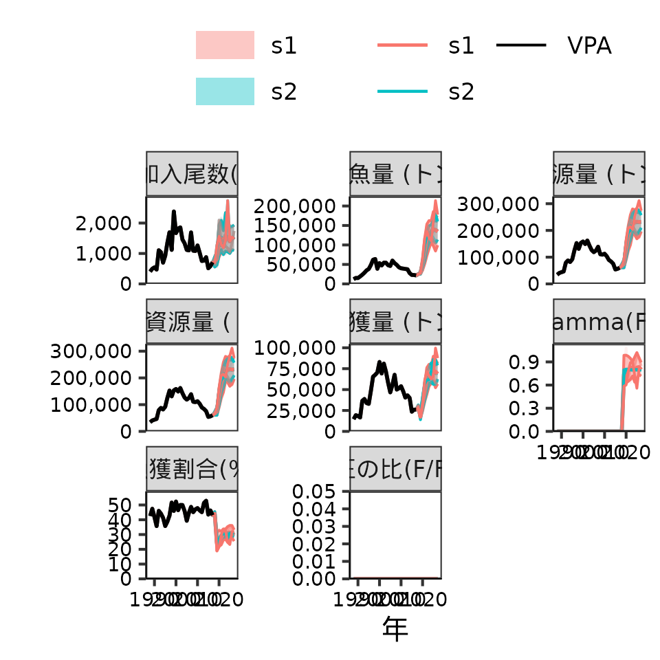
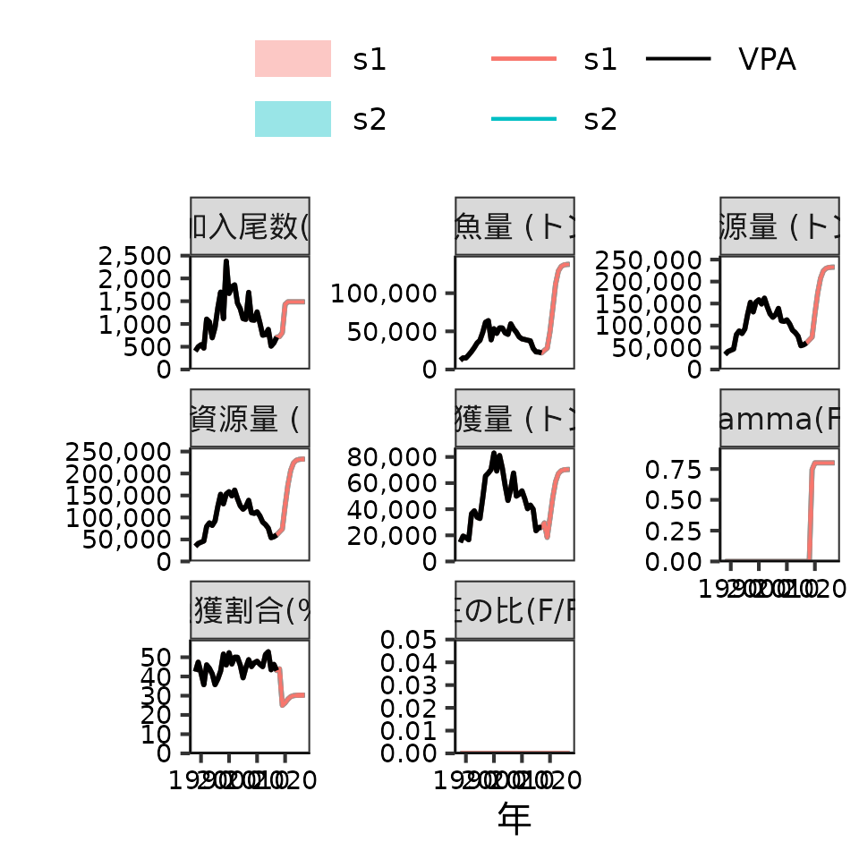

future.Rmdfrasyrでの将来予測は、1) 将来予測用のデータフレームを作る, 2) 実際に将来予測をするの２つのステップで実施します。個々のステップについて以下説明します。
library(frasyr)
#> Warning: replacing previous import 'magrittr::set_names' by 'purrr::set_names'
#> when loading 'frasyr'
#> Warning: replacing previous import 'EnvStats::rpareto' by 'rmutil::rpareto'
#> when loading 'frasyr'
#> Warning: replacing previous import 'EnvStats::ppareto' by 'rmutil::ppareto'
#> when loading 'frasyr'
#> Warning: replacing previous import 'EnvStats::qpareto' by 'rmutil::qpareto'
#> when loading 'frasyr'
#> Warning: replacing previous import 'EnvStats::dpareto' by 'rmutil::dpareto'
#> when loading 'frasyr'
#> Warning: replacing previous import 'assertthat::has_name' by 'tibble::has_name'
#> when loading 'frasyr'
#> Warning: replacing previous import 'rmutil::nesting' by 'tidyr::nesting' when
#> loading 'frasyr'
#> Warning: replacing previous import 'magrittr::extract' by 'tidyr::extract' when
#> loading 'frasyr'
data(res_vpa_example)
data(res_sr_HSL2)
data_future_test <- make_future_data(res_vpa_example, # VPAの結果
nsim = 10, # シミュレーション回数
nyear = 30, # 将来予測の年数
future_initial_year_name = 2017, # 年齢別資源尾数を参照して将来予測をスタートする年(通常はVPA計算最後の年)
start_F_year_name = 2018, # この関数で指定したFに置き換える最初の年(通常はVPA計算の最後の年の翌年)
start_biopar_year_name=2018, # この関数で指定した生物パラメータに置き換える最初の年(通常はVPA計算の最後の年の翌年)
start_random_rec_year_name = 2018, # この関数で指定した再生産関係からの加入の予測値に置き換える最初の年(通常はVPA計算の最後の年の翌年)
# biopar setting
waa_year=2015:2017, waa=NULL, # 将来の年齢別体重の設定。過去の年を指定し、その平均値を使うか、直接ベクトルで指定するか。以下も同じ。
waa_catch_year=2015:2017, waa_catch=NULL,
maa_year=2015:2017, maa=NULL,
M_year=2015:2017, M=NULL,
# faa setting
faa_year=2015:2017, # currentF, futureFが指定されない場合だけ有効になる。将来のFを指定の年の平均値とする
currentF=NULL,futureF=NULL, # 将来のABC.year以前のFとABC.year以降のFのベクトル
# HCR setting (not work when using TMB)
start_ABC_year_name=2019, # HCRを適用する最初の年(通常はVPA計算最後の年の２年後）
HCR_beta=1, # HCRのbeta
HCR_Blimit=-1, # HCRのBlimit
HCR_Bban=-1, # HCRのBban
HCR_year_lag=0, # HCRで何年遅れにするか
# SR setting
res_SR=res_sr_HSL2, # 将来予測に使いたい再生産関係の推定結果が入っているfit.SRの返り値
seed_number=1, # シード番号
resid_type="lognormal", # 加入の誤差分布（"lognormal": 対数正規分布、"resample": 残差リサンプリング）
resample_year_range=0, # リサンプリングの場合、残差をリサンプリングする年の範囲
bias_correction=TRUE, # バイアス補正をするかどうか
recruit_intercept=0, # 移入や放流などで一定の加入がある場合に足す加入尾数
# Other
Pope=res_vpa_example$input$Pope,
fix_recruit=list(year=c(2020,2021),rec=c(1000,2000)), # 例えば2020、2021年の加入を特定の尾数にしたい場合
fix_wcatch=list(year=c(2020,2021),wcatch=c(1000,2000)) # 例えば2020、2021年の漁獲量を特定の量で固定したい場合
)
#> allyear_label start end
#> 1 VPA 1988 2017
#> 2 future 2018 2047
#> plus.group = TRUE
#> Pope = TRUE
# data_future_testには、将来予測に使うデータ(data)とdata_futureを作るときに使った引数一覧(input)が入っている
names(data_future_test)
#> [1] "data" "input"
# data_future_test$dataには年齢別資源尾数naa_matなど。naa_matの将来予測部分にはまだNAが入っており、次のfuture_vpa関数でこのNAを埋める
names(data_future_test$data)
#> [1] "naa_mat" "caa_mat" "SR_mat"
#> [4] "waa_mat" "waa_catch_mat" "maa_mat"
#> [7] "M_mat" "faa_mat" "Pope"
#> [10] "total_nyear" "future_initial_year" "start_ABC_year"
#> [13] "start_random_rec_year" "nsim" "nage"
#> [16] "plus_age" "plus_group" "recruit_age"
#> [19] "max_exploitation_rate" "max_F" "scale_ssb"
#> [22] "scale_R" "HCR_mat" "obj_stat"
#> [25] "objective" "obj_value" "HCR_function_name"
#> [28] "HCR_reserve_denom" "HCR_carry_compound"
# backward-resamplingの場合
data_future_backward <- make_future_data(res_vpa_example, # VPAの結果
nsim = 1000, # シミュレーション回数
nyear = 50, # 将来予測の年数
future_initial_year_name = 2017, # 年齢別資源尾数を参照して将来予測をスタートする年
start_F_year_name = 2018, # この関数で指定したFに置き換える最初の年
start_biopar_year_name=2018, # この関数で指定した生物パラメータに置き換える最初の年
start_random_rec_year_name = 2018, # この関数で指定した再生産関係からの加入の予測値に置き換える最初の年
# biopar setting
waa_year=2015:2017, waa=NULL, # 将来の年齢別体重の設定。過去の年を指定し、その平均値を使うか、直接ベクトルで指定するか。以下も同じ。
waa_catch_year=2015:2017, waa_catch=NULL,
maa_year=2015:2017, maa=NULL,
M_year=2015:2017, M=NULL,
# faa setting
faa_year=2015:2017, # currentF, futureFが指定されない場合だけ有効になる。将来のFを指定の年の平均値とする
currentF=NULL,futureF=NULL, # 将来のABC.year以前のFとABC.year以降のFのベクトル
# HCR setting (not work when using TMB)
start_ABC_year_name=2019, # HCRを適用する最初の年
HCR_beta=1, # HCRのbeta
HCR_Blimit=-1, # HCRのBlimit
HCR_Bban=-1, # HCRのBban
HCR_year_lag=0, # HCRで何年遅れにするか
# SR setting
res_SR=res_sr_HSL2, # 将来予測に使いたい再生産関係の推定結果が入っているfit.SRの返り値
seed_number=1, # シード番号
resid_type="backward", # 加入の誤差分布（"lognormal": 対数正規分布、"resample": 残差リサンプリング）
resample_year_range=1988:2017, # リサンプリングの場合、残差をリサンプリングする年の範囲
backward_duration=5,
bias_correction=TRUE, # バイアス補正をするかどうか
recruit_intercept=0, # 移入や放流などで一定の加入がある場合に足す加入尾数
# Other
Pope=res_vpa_example$input$Pope,
fix_recruit=list(year=c(2020,2021),rec=c(1000,2000)),
fix_wcatch=list(year=c(2020,2021),wcatch=c(1000,2000))
)
#> allyear_label start end
#> 1 VPA 1988 2017
#> 2 future 2018 2067
#> plus.group = TRUE
#> Pope = TRUE
# 単なる将来予測の場合(simple resampling)
res_future_test <- future_vpa(tmb_data=data_future_test$data, # さっき作成した将来予測用のデータフレーム
optim_method="none", # "none": 単なる将来予測, "R" or "tmb": 以下、objective, obj_value等で指定した目的関数を満たすように将来のFに乗じる係数を最適化する
multi_init = 1) # 将来予測のさい、将来のFに乗じる乗数
# 単なる将来予測の場合(backward)
res_future_backward <- future_vpa(tmb_data=data_future_backward$data, # さっき作成した将来予測用のデータフレーム
optim_method="none", # "none": 単なる将来予測, "R" or "tmb": 以下、objective, obj_value等で指定した目的関数を満たすように将来のFに乗じる係数を最適化する
multi_init = 1) # 将来予測のさい、将来のFに乗じる乗数
# MSY計算の場合
res_future_test <- future_vpa(tmb_data=data_future_test$data, # さっき作成した将来予測用のデータフレーム
optim_method="R",
multi_init = 1,
multi_lower = 0.001, multi_upper = 5,
objective="MSY")
res_future_test$multi
#> [1] 0.5336939
# [1] 0.5269326
# MSY管理基準値計算用の関数を使う場合 (data_future_testを利用)
res_MSYRP <- est_MSYRP(data_future_test)
#> RP_name obj_value catch.mean ssb.mean
#> 1 PGY_0.1_lower 7244.717 7246.407 5452.853
#> 2 PGY_0.6_lower 43468.302 43474.847 35232.132
res_MSYRP$summary
#> # A tibble: 4 × 16
#> RP_name RP.definition SSB SSB2SSB0 B cB U Catch Catch.CV
#> <chr> <chr> <dbl> <dbl> <dbl> <dbl> <dbl> <dbl> <dbl>
#> 1 MSY Btarget0 1.28e5 0.257 2.25e5 2.25e5 0.323 72447. 0.112
#> 2 B0 NA 4.96e5 1 6.03e5 6.03e5 0 0 NaN
#> 3 PGY_0.1_low… Bban0 5.45e3 0.0110 1.47e4 1.47e4 0.495 7246. 0.762
#> 4 PGY_0.6_low… Blimit0 3.52e4 0.0711 9.38e4 9.38e4 0.463 43475. 0.334
#> # ℹ 7 more variables: `Fref/Fcur` <dbl>, Fref2Fcurrent <dbl>, F0 <dbl>,
#> # F1 <dbl>, F2 <dbl>, F3 <dbl>, perSPR <dbl>
# 通常の将来予測と同じように将来予測用(真の個体群動態)のデータを作成する
# (MSEは時間がかかるのでシミュレーション回数・年数は減らしたほうが良い)
data_future_as_true <- make_future_data(res_vpa_example,
nsim = 30, nyear = 10,
future_initial_year_name = 2017,
start_F_year_name = 2018,
start_biopar_year_name=2018,
start_random_rec_year_name = 2018,
# biopar setting
waa_year=2015:2017, waa=NULL,
waa_catch_year=2015:2017, waa_catch=NULL,
maa_year=2015:2017, maa=NULL,
M_year=2015:2017, M=NULL,
faa_year=NULL,
currentF=apply_year_colum(res_vpa_example$faa,2015:2017),
futureF=apply_year_colum(res_vpa_example$faa,2015:2017)*0.6,
# HCR setting (not work when using TMB)
start_ABC_year_name=2019,
# MSEの場合、ABC計算から漁獲量を決め、そのとおりに漁獲するので
# 以下のHCRの設定は関係ない
HCR_beta=0.8, HCR_Blimit=30000, HCR_Bban=0,
HCR_year_lag=0,
# SR setting
res_SR=res_sr_HSL2, seed_number=1,
resid_type="lognormal",
resample_year_range=0, bias_correction=TRUE,
recruit_intercept=0,
Pope=res_vpa_example$input$Pope)
#> allyear_label start end
#> 1 VPA 1988 2017
#> 2 future 2018 2027
#> plus.group = TRUE
#> Pope = TRUE
# ABC計算用の設定をした将来予測用のデータを作成する
data_future_for_ABC <- make_future_data(res_vpa_example,
nsim = 30, nyear = 10,
future_initial_year_name = 2017,
start_F_year_name = 2018,
start_biopar_year_name=2018,
start_random_rec_year_name = 2018,
# biopar setting
waa_year=2015:2017, waa=NULL,
waa_catch_year=2015:2017, waa_catch=NULL,
maa_year=2015:2017, maa=NULL,
M_year=2015:2017, M=NULL,
faa_year=NULL,
currentF=apply_year_colum(res_vpa_example$faa,2015:2017),
futureF=apply_year_colum(res_vpa_example$faa,2015:2017)*0.6,
# HCR setting (not work when using TMB)
start_ABC_year_name=2019,
# ここの管理基準値などを、別の再生産関係などから推定されたものにする
HCR_beta=0.8, HCR_Blimit=30000, HCR_Bban=0,
HCR_year_lag=0,
# SR setting
# ここも真の再生産関係とは異なるものにする
res_SR=res_sr_HSL1, seed_number=1,
resid_type="lognormal",
resample_year_range=0, bias_correction=TRUE,
recruit_intercept=0,
Pope=res_vpa_example$input$Pope)
#> allyear_label start end
#> 1 VPA 1988 2017
#> 2 future 2018 2027
#> plus.group = TRUE
#> Pope = TRUE
# MSEする
res_future_MSE <- future_vpa(tmb_data=data_future_as_true$data, # 真の個体群動態
do_MSE=TRUE,
MSE_input_data=data_future_for_ABC, # ABC計算用の個体群動態
optim_method="none", # "none"にする
multi_init = 1)
# MSEしないとき
res_future_noMSE <- future_vpa(tmb_data=data_future_as_true$data, # 真の個体群動態
do_MSE=FALSE,
MSE_input_data=data_future_for_ABC, # ABC計算用の個体群動態
optim_method="none", # "none"にする
multi_init = 1)
# MSEする場合としない場合の比較
plot_futures(res_vpa_example,list(res_future_MSE,res_future_noMSE))
#> Joining with `by = join_by(stat)`
#> Joining with `by = join_by(stat)`
#> Joining with `by = join_by(stat)`
#> Joining with `by = join_by(scenario)`
#> Warning: Using alpha for a discrete variable is not advised.
#> Warning: The `size` argument of `element_line()` is deprecated as of ggplot2 3.4.0.
#> ℹ Please use the `linewidth` argument instead.
#> ℹ The deprecated feature was likely used in the frasyr package.
#> Please report the issue to the authors.
#> This warning is displayed once per session.
#> Call `lifecycle::last_lifecycle_warnings()` to see where this warning was
#> generated.
### MSEプログラムが想定通り動いているかの確認
dummy_future <- data_future_as_true
# 将来予測の加入の確率変動をゼロにする→全く同じ再生産関係を使えば、同じ結果になるはず
dummy_future$data$SR_mat[,,"deviance"] <- 0
dummy_future$data$SR_mat[,,"rand_resid"] <- 0
dummy_future$input$res_SR$pars$sd <- 0
res_test1 <- future_vpa(tmb_data=dummy_future$data,
do_MSE=TRUE,
MSE_input_data=dummy_future,
optim_method="none",
multi_init = 1)
res_test2 <- future_vpa(tmb_data=dummy_future$data,
do_MSE=FALSE,
MSE_input_data=dummy_future, # MSE内の将来予測で用いるためのデータフレーム
optim_method="none", # "none"または"R"のみ有効
multi_init = 1)
# 全く同じ結果になる
plot_futures(res_vpa_example,list(res_test1,res_test2))
#> Joining with `by = join_by(stat)`
#> Joining with `by = join_by(stat)`
#> Joining with `by = join_by(stat)`
#> Joining with `by = join_by(scenario)`
#> Warning: Using alpha for a discrete variable is not advised.